မာတိကာ Table of Contents
စတင်အသုံးပြုခြင်း Getting Started
App အကြောင်း / About the app
m-MNCH Care app သည် မိခင်နှင့်ကလေး ကျန်းမာရေး စောင့်ရှောက်မှုအတွက် လူနာတစ်ဦး၏ ခရီးစဉ်ကို အစအဆုံး မှတ်တမ်းတင်နိုင်သော app ဖြစ်သည်။ The m-MNCH Care app records a patient’s care journey from registration through pregnancy, labour, newborn care, postnatal care, immunization, and reports.
- လူနာအသစ် မှတ်ပုံတင်နိုင်သည်။Register new patients.
- ANC, LCG, Newborn, PNC မှတ်တမ်းများ သိမ်းနိုင်သည်။Record ANC, LCG, newborn, and PNC care.
- အစီရင်ခံစာများ ကြည့်ရှုပြီး ပရင့်ထုတ်နိုင်သည်။View and print reports.
- Internet မရှိသေးသည့်အချိန်တွင်လည်း အချို့လုပ်ငန်းများကို Offline ဖြင့် ဆက်လုပ်နိုင်သည်။Continue selected work offline and sync later.

လူနာ၏ အချက်အလက်များသည် လုံခြုံရေးအရေးကြီးပါသည်။ မိမိ password ကို မည်သူ့ကိုမျှ မပေးပါနှင့်။Patient information is sensitive. Do not share your password with anyone.
အကောင့်ဖွင့်ခြင်းAccount Registration
အကောင့်အသစ် တောင်းဆိုခြင်း / Request a new account
- Login စာမျက်နှာတွင် Register သို့မဟုတ် Create Account ကိုနှိပ်ပါ။On the Login screen, tap Register or Create Account.
- အမည်၊ Email၊ ဖုန်းနံပါတ်၊ Role၊ Region၊ Township၊ Facility ကို ဖြည့်ပါ။Enter name, email, phone, role, region, township, and facility.
- Password ကို မှန်ကန်စွာ ထည့်ပါ။ မှတ်မိလွယ်သော်လည်း လုံခြုံသော password ဖြစ်ရမည်။Enter a secure password that you can remember.
- Register ကိုနှိပ်ပါ။Tap Register.
- အကောင့်ကို အုပ်ချုပ်သူက အတည်ပြုရပါမည်။ အတည်ပြုပြီးမှ Login ဝင်နိုင်ပါမည်။An administrator must approve the account before you can log in.

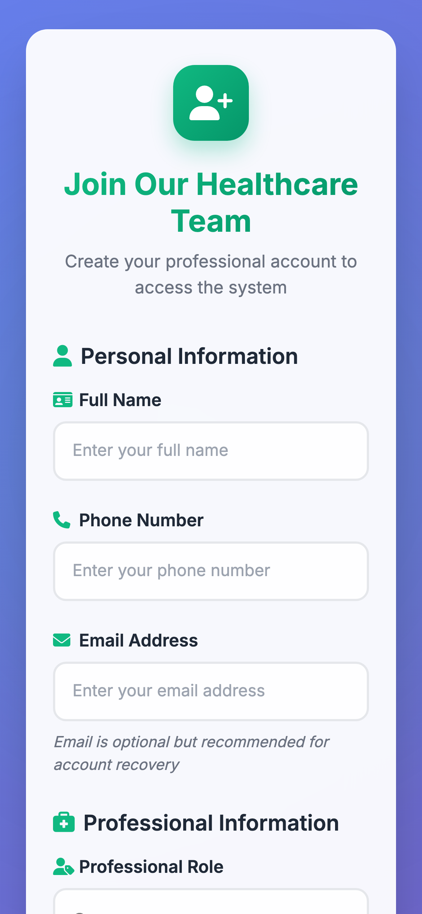
Login နှင့် ConsentLogin and Consent
Login ဝင်ခြင်း / Log in
- Email box တွင် မိမိ email ကို ရိုက်ပါ။Type your email in the email field.
- Password box တွင် password ကို ရိုက်ပါ။Type your password in the password field.
- Offline သုံးရန် လိုပါက Keep me logged in ကို အမှန်ခြစ်ပါ။For offline use, tick Keep me logged in.
- Login ကိုနှိပ်ပါ။Tap Login.
- ပထမဆုံးအသုံးပြုပါက Provider Consent စာမျက်နှာပေါ်လာနိုင်ပါသည်။ စာကိုဖတ်ပြီး သဘောတူပါ။On first use, the Provider Consent page may appear. Read it and accept.
Home Screen နှင့် Cards များHome Screen and Cards
ပင်မစာမျက်နှာ အသုံးပြုပုံ / How to use Home
- Home တွင် မိမိအကောင့်၊ Role၊ Facility အချက်အလက်ကို စစ်ပါ။Check your account, role, and facility details.
- မြန်မာ/အင်္ဂလိပ် ပြောင်းလိုပါက MM သို့မဟုတ် ENG ကိုနှိပ်ပါ။Tap MM or ENG to change language.
- လူနာအသစ်အတွက် Patient Registration ကိုနှိပ်ပါ။For a new patient, tap Patient Registration.
- ရှိပြီးသားလူနာကို ရှာရန် Select Patient for Care ကိုနှိပ်ပါ။To find an existing patient, tap Select Patient for Care.
- Offline မှတ်တမ်းများရှိပါက Sync ကိုနှိပ်ပြီး Cloud သို့ပို့ပါ။If offline records exist, tap Sync to send them to the cloud.
Home Cards များ၏ အဓိပ္ပါယ် / What each Home card means
Home screen တွင် မိမိ role အလိုက် card များကွဲပြားနိုင်ပါသည်။ အချို့ card များသည် Midwife အတွက်ဖြစ်ပြီး၊ အချို့မှာ TMO/Regional Officer/Admin အတွက်သာ ပေါ်နိုင်ပါသည်။ Cards on the Home screen can differ by role. Some are for midwives, while others are shown only for TMO, Regional Officer, or Admin users.
| Card အမည်Card name | ဘာအတွက်သုံးသလဲPurpose | အသုံးပြုပုံHow to use |
|---|---|---|
| Patient Registration လူနာမှတ်ပုံတင်ခြင်း |
လူနာအသစ်ကို စနစ်ထဲသို့ စတင်ထည့်ရန်။Register a new patient in the system. | Card ကိုနှိပ်ပါ၊ form ဖြည့်ပါ၊ consent ယူပြီး save လုပ်ပါ။Tap the card, complete the form, record consent, then save. |
| Select Patient for Care လူနာရွေးချယ်ရန် |
ရှိပြီးသားလူနာကိုရှာပြီး care modules များသို့ဝင်ရန်။Find an existing patient and open care modules. | Search/filter ဖြင့်လူနာရှာပါ၊ မှန်ကန်သော patient card ကိုနှိပ်ပါ။Search or filter, then tap the correct patient card. |
| Patient Transfers လူနာ လွှဲပြောင်းမှုများ |
လူနာကို အခြား facility သို့လွှဲရန် သို့မဟုတ် ဝင်လာသော transfer request များလက်ခံရန်။Send transfer requests or accept incoming transferred patients. | Open Transfers ကိုနှိပ်ပါ။ ဝင်လာသော request ရှိပါက badge/အနီရောင်စာကိုစစ်ပါ။ Internet လိုနိုင်ပါသည်။Tap Open Transfers. Check badges or red hints for incoming requests. Internet may be required. |
| Analytics Dashboard ဒက်ရှ်ဘုတ် |
Facility/လုပ်ငန်းဆောင်ရွက်မှု အချက်အလက်များကို charts, counts, reports အဖြစ်ကြည့်ရန်။View facility or activity data as charts, counts, and reports. | View Dashboard ကိုနှိပ်ပါ။ Internet ရှိသောအချိန်တွင် အသုံးပြုရန် အကြံပြုပါသည်။Tap View Dashboard. Recommended when internet is available. |
| Township Report မြို့နယ် အစီရင်ခံစာ |
TMO role အတွက် မြို့နယ်အဆင့် A4 printable report ထုတ်ရန်။For TMO users to generate township-level A4 printable reports. | Generate Report ကိုနှိပ်ပါ။ လိုအပ်သော township data ကိုကြည့်ပြီး print/PDF ထုတ်ပါ။Tap Generate Report, review township data, then print or save PDF. |
| Manage Midwives သားဖွား/မီးဖွားကျွမ်းကျင်သူများ စီမံခန့်ခွဲရန် |
Admin/Super Admin အတွက် midwife account များကြည့်ရန်နှင့် အချက်အလက်ပြင်ရန်။For Admin/Super Admin users to view and update midwife accounts. | Manage Midwives ကိုနှိပ်ပြီး account, region, township, facility ကိုစစ်ပါ။Tap Manage Midwives to review account, region, township, and facility details. |
| Admin Dashboard စီမံခန့်ခွဲမှု ဒက်ရှ်ဘုတ် |
Super Admin အတွက် system administration နှင့် user management လုပ်ရန်။For Super Admin system administration and user management. | Admin Panel ကိုနှိပ်ပါ။ ဤ card သည် သာမန် midwife များတွင် မပေါ်နိုင်ပါ။Tap Admin Panel. This card may not appear for regular midwives. |
| CME - Continuous Medical Learning စဉ်ဆက်မပျက် လေ့လာသင်ယူမှုများ |
သင်ခန်းစာများ၊ mandatory/optional learning module များလေ့လာရန်။Access mandatory and optional learning modules. | Start Learning ကိုနှိပ်ပါ။ သင်ခန်းစာကိုဖတ်ပြီး လိုအပ်ပါက quiz/ပြီးဆုံးမှုကိုလုပ်ပါ။Tap Start Learning, read the lesson, and complete any quiz or completion step if shown. |
| High Risk Tracking အန္တရာယ်မြင့် လူနာ စောင့်ကြည့်မှု |
မဖြေရှင်းရသေးသော high-risk လူနာများနှင့် follow-up လိုသောလူနာများကိုကြည့်ရန်။Review unresolved high-risk patients and follow-up actions. | Open High Risk Tracking ကိုနှိပ်ပါ။ Badge တွင် follow-up လိုသောလူနာအရေအတွက် ပေါ်နိုင်ပါသည်။Tap Open High Risk Tracking. A badge may show how many patients need follow-up. |
| Scoreboard / Leaderboard အမှတ်ပေးဇယား |
Midwife performance ranking နှင့် score တွက်ချက်မှုကိုကြည့်ရန်။View midwife performance ranking and score calculation. | View Leaderboard ကိုနှိပ်ပါ။ မိမိအဆင့်နှင့် score ကိုကြည့်ပါ။Tap View Leaderboard to see your rank and score. |
လူနာမှတ်ပုံတင်ခြင်းPatient Registration
လူနာအသစ် မှတ်ပုံတင်ခြင်း / Register a new patient
- Home မှ Patient Registration ကိုနှိပ်ပါ။From Home, tap Patient Registration.
- လူနာအမည်၊ အသက်၊ ဖုန်းနံပါတ်၊ လိပ်စာကို ဖြည့်ပါ။Enter name, age, phone number, and address.
- ကိုယ်ဝန်ဆိုင်ရာ အချက်အလက်များဖြစ်သော Gravida, Parity, LMP, EDD ကို ဖြည့်ပါ။Enter pregnancy details such as gravida, parity, LMP, and EDD.
- လိုအပ်သော field များကို မဖြည့်ပါက Save မလုပ်နိုင်ပါ။ အနီရောင် သတိပေးစာကို ဖတ်ပါ။Required fields must be completed. Read any red warning messages.
- Save သို့မဟုတ် Continue ကိုနှိပ်ပါ။Tap Save or Continue.
- Patient Consent စာမျက်နှာပေါ်လာပါက လူနာအားရှင်းပြပြီး သဘောတူချက်ယူပါ။If Patient Consent appears, explain it to the patient and record consent.
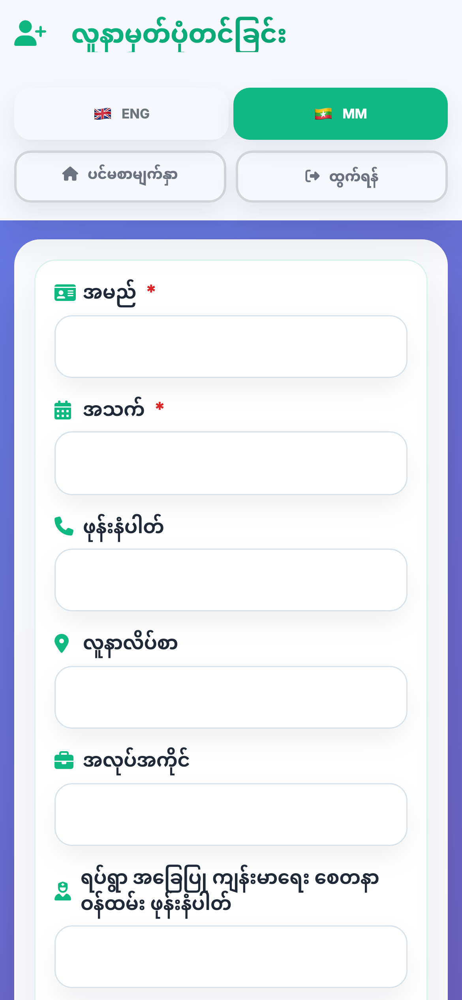
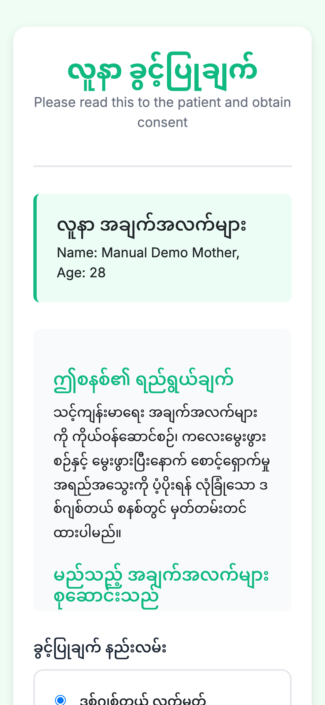
လူနာရှာဖွေခြင်းနှင့် Patient Care HubPatient List and Patient Care Hub
လူနာရွေးခြင်း / Select a patient
- Home မှ Select Patient for Care ကိုနှိပ်ပါ။From Home, tap Select Patient for Care.
- Search box တွင် အမည်၊ ဖုန်း၊ patient ID ဖြင့် ရှာပါ။Use the search box to search by name, phone, or patient ID.
- Status chip များဖြင့် Registered, Antenatal, Labour, Postnatal လူနာများကို ခွဲရှာနိုင်ပါသည်။Use status chips to filter Registered, Antenatal, Labour, or Postnatal patients.
- မှန်ကန်သော လူနာ card ကိုနှိပ်ပါ။Tap the correct patient card.
- Patient Care Hub တွင် ANC, Labour, Newborn, PNC, Immunization, Reports ကိုရွေးပါ။On Patient Care Hub, choose ANC, Labour, Newborn, PNC, Immunization, or Reports.
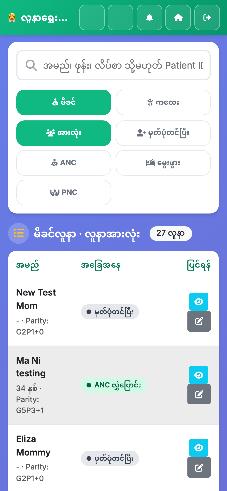
ANC - ကိုယ်ဝန်ဆောင် စောင့်ရှောက်မှုAntenatal Care
ANC Visit မှတ်တမ်းတင်ခြင်း / Record an ANC visit
- Patient Care Hub မှ Antenatal Care ကိုနှိပ်ပါ။From Patient Care Hub, tap Antenatal Care.
- New ANC Visit ကိုရွေးပါ။Choose New ANC Visit.
- Visit Date, LMP/EDD, gestational age, history ကို စစ်ပါ။Check visit date, LMP/EDD, gestational age, and history.
- Vital signs, BP, pulse, temperature, examination, danger signs ကို ဖြည့်ပါ။Enter vital signs, BP, pulse, temperature, examination, and danger signs.
- အန္တရာယ်သတိပေးချက်ပေါ်လာပါက clinical guideline အတိုင်း ဆက်လုပ်ပါ။If an alert appears, follow clinical guidance.
- Save Visit Data ကိုနှိပ်ပါ။Tap Save Visit Data.
ANC Tests, Education, Report
- ANC Hub မှ Tests ကိုနှိပ်၍ lab test များကို ထည့်ပါ။From the ANC Hub, open Tests to record lab results.
- Education မှ Nutrition, Breastfeeding, Self-care စသည့်သင်ခန်းစာများကို ပြသနိုင်ပါသည်။Use Education to show nutrition, breastfeeding, and self-care topics.
- ANC Report မှ visit history နှင့် next ANC date ကို ကြည့်ပါ။Use ANC Report to view visit history and next ANC date.
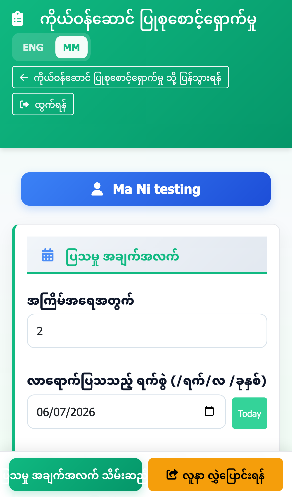

LCG - မွေးဖွားချိန် စောင့်ရှောက်မှုLabour Care Guide
Labour Care စတင်ခြင်း / Start labour care
- Patient Care Hub မှ Labour Care ကိုနှိပ်ပါ။From Patient Care Hub, tap Labour Care.
- ပထမဆုံးဝင်ပါက Labour setup တွင် labour onset, membrane, active first stage start time ကိုဖြည့်ပါ။If first time, complete labour onset, membrane, and active first stage start time in setup.
- LCG entry တွင် အချိန်အလိုက် maternal condition, fetal condition, contractions, cervix စသည့်အချက်များကို ထည့်ပါ။In LCG entry, record maternal condition, fetal condition, contractions, cervix, and other observations by time.
- အချက်အလက်များကို မကြာခဏ Save လုပ်ပါ။Save data frequently.
- Summary View မှ chart ကိုကြည့်ပြီး လိုအပ်ပါက ပရင့်ထုတ်ပါ။Use Summary View to review and print the chart if needed.
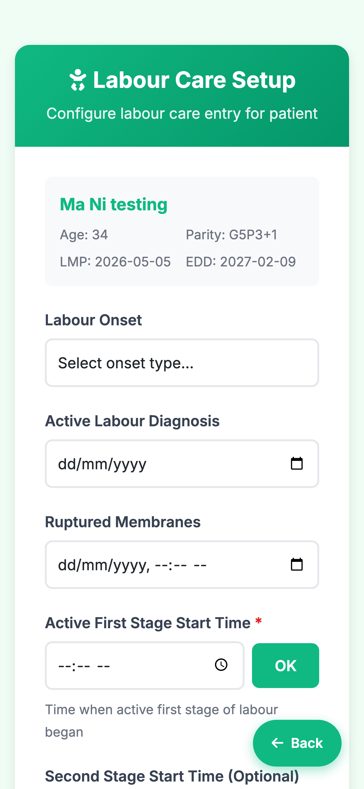
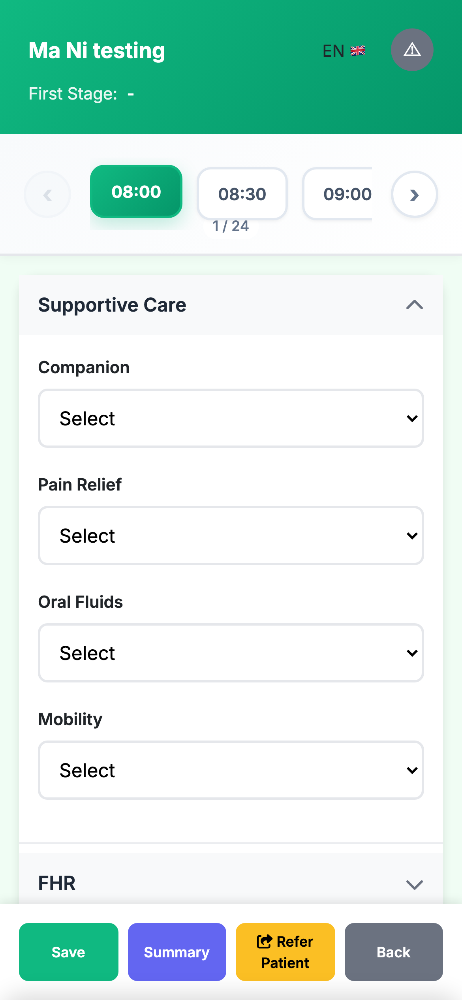
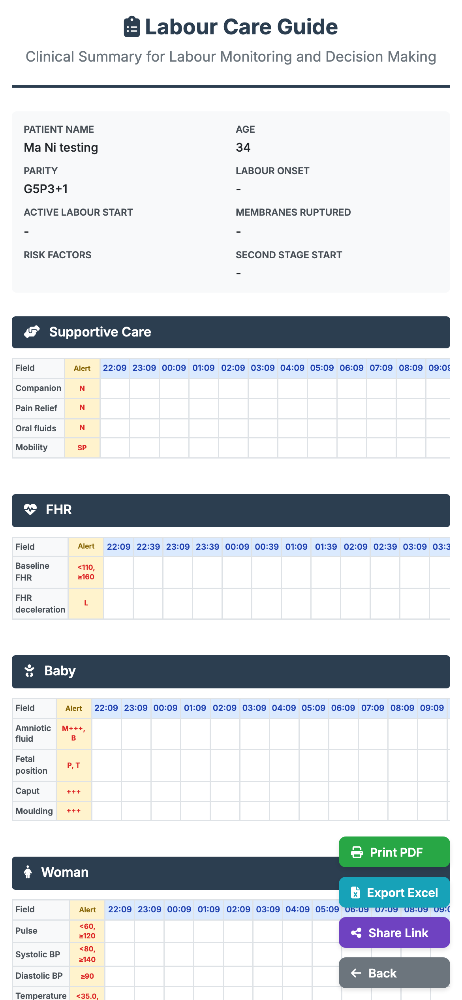
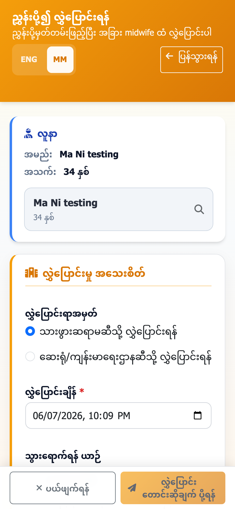
မွေးကင်းစ စောင့်ရှောက်မှုNewborn Care
Immediate Newborn Care
- Patient Care Hub မှ Newborn Care ကိုနှိပ်ပါ။From Patient Care Hub, tap Newborn Care.
- Immediate Newborn Care ကိုရွေးပါ။Choose Immediate Newborn Care.
- Baby name, birth date/time, sex, weight, Apgar, immediate care actions ကိုဖြည့်ပါ။Enter baby name, birth date/time, sex, weight, Apgar, and immediate care actions.
- Breathing, warmth, breastfeeding, danger signs စသည့်အချက်များကို မှတ်တမ်းတင်ပါ။Record breathing, warmth, breastfeeding, danger signs, and care actions.
- Save ကိုနှိပ်ပါ။Tap Save.
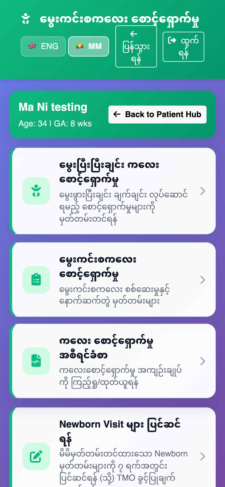
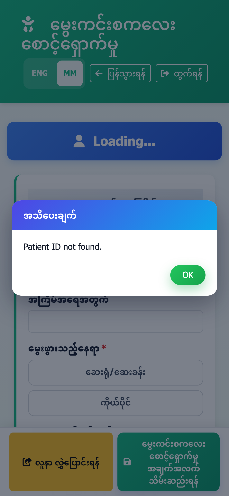
PNC - မွေးပြီးမိခင် ပြုစုမှုPostnatal Care
PNC Visit မှတ်တမ်းတင်ခြင်း / Record a PNC visit
- Patient Care Hub မှ PNC သို့မဟုတ် Postnatal Care ကိုနှိပ်ပါ။From Patient Care Hub, tap PNC or Postnatal Care.
- New PNC Visit ကိုနှိပ်ပါ။Tap New PNC Visit.
- Visit date, delivery date/time, postpartum period ကိုစစ်ပါ။Check visit date, delivery date/time, and postpartum period.
- Vital signs, physical examination, danger signs, treatment, notes ကိုဖြည့်ပါ။Enter vital signs, physical examination, danger signs, treatment, and notes.
- လွှဲပြောင်းရန်လိုပါက Refer Patient ကိုနှိပ်ပါ။If referral is needed, tap Refer Patient.
- ပြီးပါက Save Postpartum Visit ကိုနှိပ်ပါ။When complete, tap Save Postpartum Visit.
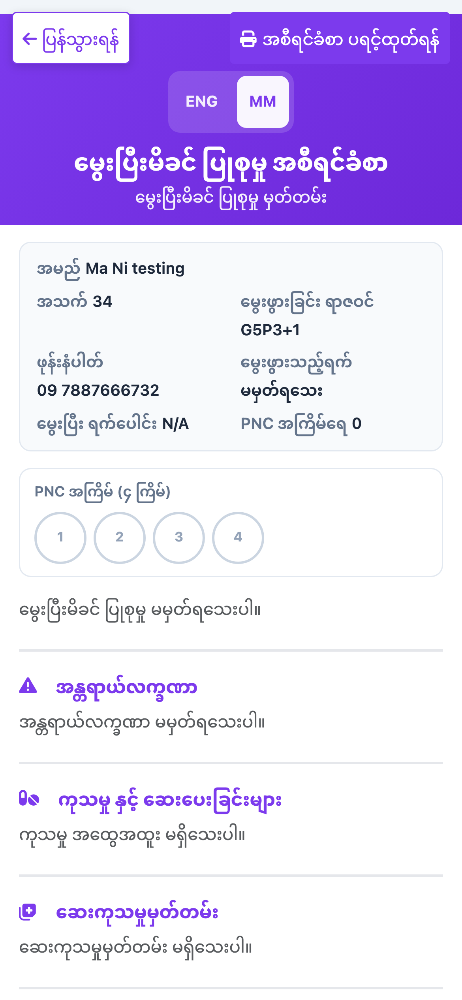
ကာကွယ်ဆေးImmunization
Vaccine Record
- Patient Care Hub မှ Immunization ကိုနှိပ်ပါ။From Patient Care Hub, tap Immunization.
- ကာကွယ်ဆေးထိုးမှတ်တမ်းအသစ် ထည့်ရန် Record Vaccine ကိုရွေးပါ။Choose Record Vaccine to add a new immunization record.
- Vaccine name, date, dose, remark ကိုဖြည့်ပါ။Enter vaccine name, date, dose, and remarks.
- Schedule ကိုကြည့်၍ နောက်တစ်ကြိမ်လာရမည့်နေ့ကို လူနာမိသားစုအားရှင်းပြပါ။Use the schedule to explain the next due vaccine date to the family.
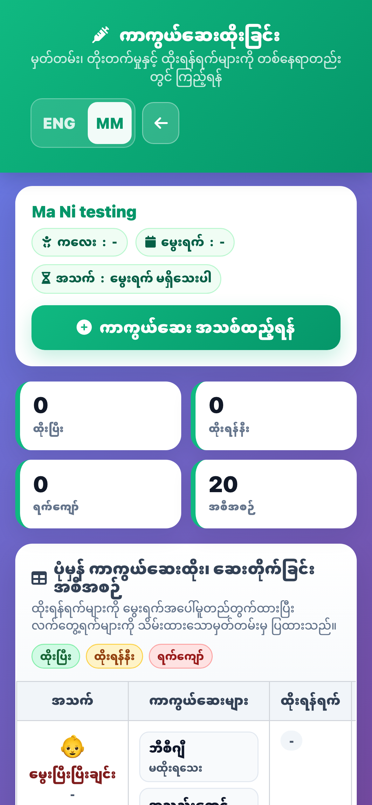
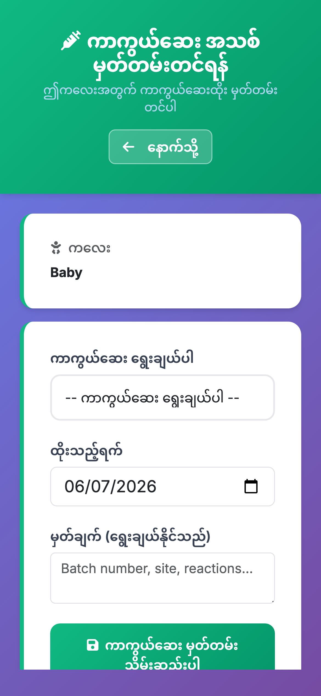
အစီရင်ခံစာများနှင့် ပရင့်ထုတ်ခြင်းReports and Printing
Reports ကြည့်ခြင်း / View reports
- Patient Care Hub မှ individual report သို့မဟုတ် Overall Patient Report ကိုရွေးပါ။From Patient Care Hub, choose an individual report or Overall Patient Report.
- Overall Patient Report တွင် Overview, ANC, Labour, Newborn, PNC tabs များရှိသည်။Overall Patient Report contains Overview, ANC, Labour, Newborn, and PNC tabs.
- မြန်မာ/အင်္ဂလိပ် ပြောင်းလိုပါက ENG/MM ကိုနှိပ်ပါ။Use ENG/MM to change report language.
- ပရင့်ထုတ်ရန် Print ခလုတ်ကိုနှိပ်ပါ။ Phone တွင် PDF အဖြစ် Save လုပ်နိုင်ပါသည်။Tap Print to print or save as PDF on a phone.
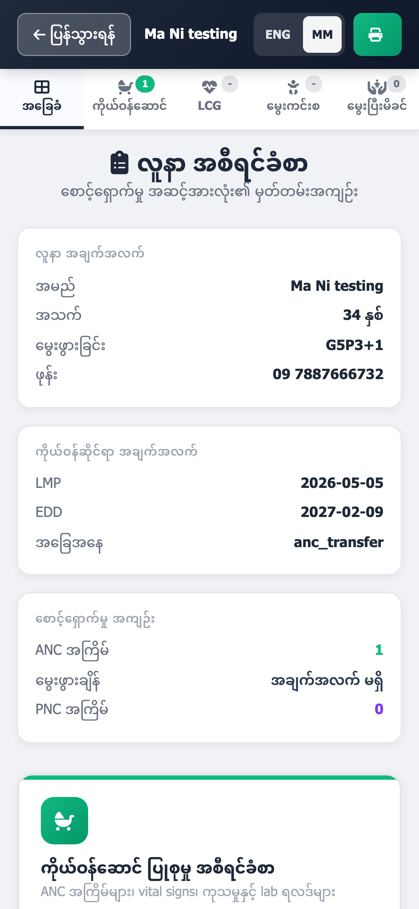
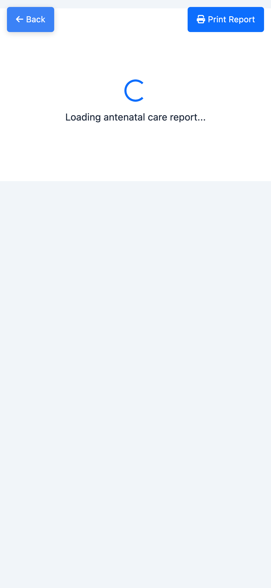
Offline နှင့် SyncOffline and Sync
Internet မရှိသောအချိန် / When internet is not available
- Login ဝင်စဉ် Keep me logged in ကို အမှန်ခြစ်ထားပါက offline တွင် အချို့လုပ်ငန်းများ ဆက်လုပ်နိုင်ပါသည်။If Keep me logged in was ticked during login, selected workflows can continue offline.
- Offline banner ပေါ်လာပါက Internet မရှိကြောင်း သိနိုင်ပါသည်။An offline banner shows when internet is unavailable.
- လူနာမှတ်တမ်းများကို local device ထဲတွင် ယာယီသိမ်းထားပါသည်။Records are temporarily saved on the device.
- Internet ပြန်ရပါက Home တွင် Sync ကိုနှိပ်ပါ။When internet returns, tap Sync on Home.
- Sync ပြီးကြောင်း message ပေါ်လာသည်အထိ စောင့်ပါ။Wait until the sync completion message appears.

ပြဿနာဖြေရှင်းနည်းTroubleshooting
| ပြဿနာProblem | လုပ်ဆောင်ရန်What to do |
|---|---|
| Login မဝင်နိုင်ပါCannot log in | Internet ရှိ/မရှိ စစ်ပါ။ Email/Password မှန်မမှန် စစ်ပါ။ အကောင့် approval ရပြီးမရပြီးကို supervisor ကိုမေးပါ။Check internet, email/password, and whether the account has been approved. |
| လူနာမတွေ့ပါPatient not found | အမည် spelling, ဖုန်းနံပါတ်, patient ID ဖြင့် ပြန်ရှာပါ။ Status filter ကို All သို့ပြောင်းပါ။Search again by spelling, phone, or patient ID. Change status filter to All. |
| Save မလုပ်နိုင်ပါCannot save | Required field များပြည့်စုံမစုံ စစ်ပါ။ Red warning message ကိုဖတ်ပါ။ Internet မရှိပါက local save ဖြစ်နိုင်သည်။Check required fields and red warnings. If offline, the record may save locally. |
| App ပြောင်းလဲမှုအသစ် မပေါ်ပါNew app changes do not appear | Hard refresh လုပ်ပါ။ PWA ဖြစ်ပါက app ကိုပိတ်ပြီးပြန်ဖွင့်ပါ။ လိုအပ်ပါက supervisor ကို ဆက်သွယ်ပါ။Hard refresh. If using the PWA, close and reopen it. Contact a supervisor if needed. |
| Sync မအောင်မြင်ပါSync failed | Internet တည်ငြိမ်အောင်စောင့်ပါ။ Home သို့ပြန်သွားပြီး Sync ကို ထပ်နှိပ်ပါ။ App data ကို မဖျက်ပါနှင့်။Wait for stable internet, return to Home, and tap Sync again. Do not delete app data. |